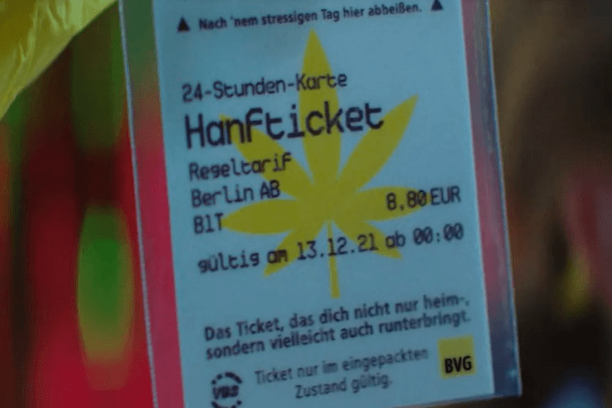

“Boleto cannabis”: la extravagante propuesta de Berlín para viajar “relajados”.

El ticket contiene un máximo de tres gotas de aceite de cáñamo, una sustancia proveniente de las semillas del cannabis que no contiene CBD ni THC.
BERLÍN.- La dirección de los transportes de Berlín (BVG) lanzó esta semana un boleto de transporte comestible con sabor a aceite de cannabis para reducir el estrés de los viajeros ansiosos por la crisis de coronavirus o las compras de Navidad.
“Quienes quieren vivir Navidad en total relajación, lo hacen con nosotros, la BVG. Y para una relajación suplementaria, hemos encontrado un medio: una droga de las buenas” explica en un video de presentación la BVG, que administra autobuses, tranvías y el metro en Berlín.